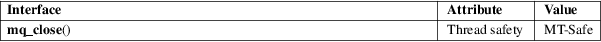

mq_close − close a message queue descriptor
Real-time library (librt, −lrt)
#include <mqueue.h>
int mq_close(mqd_t mqdes);
mq_close() closes the message queue descriptor mqdes.
If the calling process has attached a notification request (see mq_notify(3)) to this message queue via mqdes, then this request is removed, and another process can now attach a notification request.
On success mq_close() returns 0; on error, −1 is returned, with errno set to indicate the error.
|
EBADF |
The message queue descriptor specified in mqdes is invalid. |
For an explanation of the terms used in this section, see attributes(7).

POSIX.1-2008.
POSIX.1-2001.
All open message queues are automatically closed on process termination, or upon execve(2).
mq_getattr(3), mq_notify(3), mq_open(3), mq_receive(3), mq_send(3), mq_unlink(3), mq_overview(7)